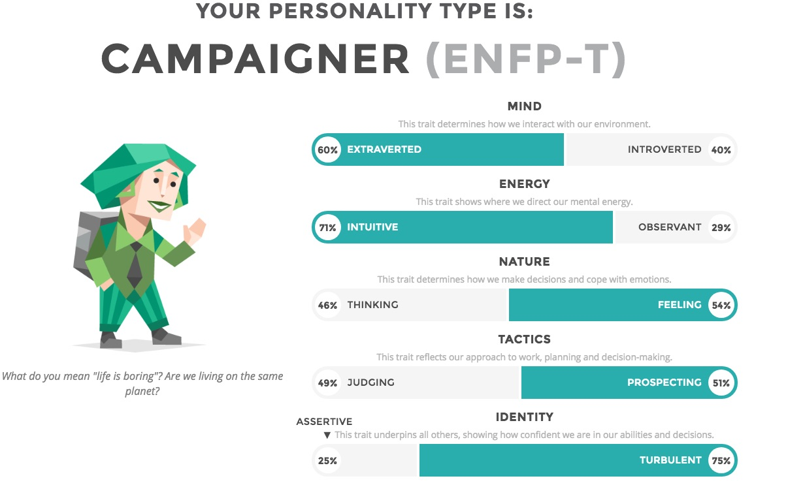
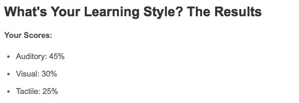
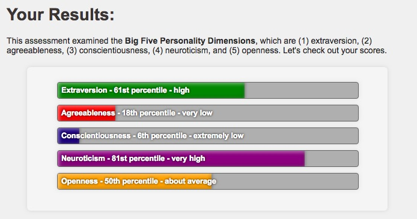

MY PROFILE
MYER-BRIGGS TEST:
My mind results display that I scored higher for extraversion compared to introversion. This signifies that I am more likely to direct and source my energy from the external world and tend to make decisions quickly. My energy results display that I scored higher for intuition compared to observant. This means that I am an abstract thinker who thinks of theoretical ideas and future possibilities. My nature results display that I scored higher for feeling compared to thinking. This shows how the reasoning behind many of my decisions revolves around my personal values. Being driven by emotion and giving priority to relationships are two factors of scoring highest on feeling. My tactic results display that I scored higher for prospecting compared to judging. This indicates that as a perceiver I prefer my environment to be open ended and find that having plans is stifling. My identity results display that I scored higher for turbulent compared to assertive. This proposed that I am more likely to be self-conscious and concerned about how others perceive me. Based on all of these results, my personality type is: The Campaigner. This personality type makes up only 7% of the population and is defined as being a true free spirit. Campaigners crave creativity and freedom and can sometimes rely too much on their intuition.

LEARNING STYLE TEST:
Learning styles refer to the way an individual best expands and gathers information. My results display that my main learning style is auditory learning. This specific style involves hearing information aloud as well as speaking through content, in order to learn and cement new knowledge.

BIG FIVE PERSONALITY TEST:
My results were high in extraversion indicating that I am a talkative and sociable person. I scored low in agreeableness meaning that I can often be blunt and forthcoming with my emotions, whilst also being highly likely to express my individuality. My extremely low score in conscientiousness shows that I can be careless, spontaneous, and unstructured. My high score in neuroticism shows I am likely to experience frequent negative emotions, but may also be apply to display various emotions. My score for openness was in the average range meaning that I am balanced when it comes to my levels of creativity and curiosity as well as preference for routines.

CONCLUSION:
I believe that the majority of the results from these test are rather accurate and do a good job of encompassing who I am as a person. The results seem to support my own personal views of what my personality consists of. These results may influence my behaviour within my team in both positive and challenging ways. My likeliness for social interaction and creative thinking will allow me to form relationships with members of my group. However, my spontaneous and at times careless nature could be a hindrances when working with others. When forming a team I should take into account all aspects of my personality to ensure that I align myself with individuals whose own personalities balance out my own. Hopefully, this plan will result in an organised and productive team and group environment that is capable of completing the task at hand to the best of our ability.